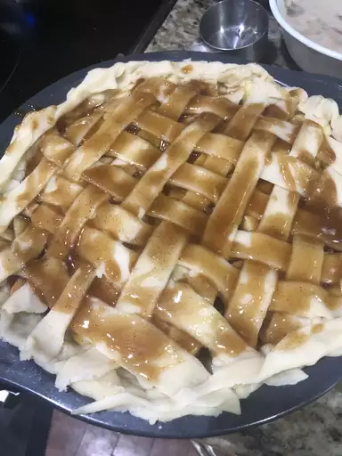

Butter Flaky Pie Crust

Description
This pie crust recipe made with butter produces a consistent dough that bakes into a crisp and flaky pie crust every time. It's perfect for any single-crust pie.
If you're intimidated by making homemade pie dough, you've come to the right place. This flaky pie crust is perfect for beginner bakers and seasoned professionals — it'll quickly become a staple in your recipe box.
Ingredients
- 1 1/4 cups all-purpose flour
- 1/4 teaspoon salt
- 1/2 cup butter, diced and then chilled
- 1/4 cup ice cold water, or as needed
Steps
- Combine flour and salt in a large bowl. Use a pasty blender to cut in chilled, diced butter until mixture resembles coarse crumbs.
- Add 1 tablespoon cold water at a time, mixing with a spatula or your hands until the dough comes together; you may need less than 1/4 cup water. Shape dough into a disc, wrap in plastic, and refrigerate for at least 4 hours or overnight.
- Place chilled dough on a generously floured surface and roll out to an 11-inch circle, adding more flour to your rolling pin as needed. Carefully roll dough onto the rolling pin, then unroll over a 9-inch pie dish. Press dough evenly into the bottom and sides of the dish. Trim any excess dough and flute the edges.
- Blind-bake or fill and bake as directed in your pie recipe.